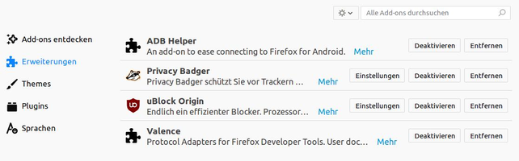

Erweiterungen
Ausbaufähige Anleitung
Dieser Anleitung fehlen noch einige Informationen. Wenn Du etwas verbessern kannst, dann editiere den Beitrag, um die Qualität des Wikis noch weiter zu verbessern.
Anmerkung: Der Artikel müsste auch den Stand von Firexfox 57 angepasst werden.
Achtung!
Da von Firefox alle sechs Wochen eine neue Version erscheint, kann dieser Artikel leider nicht – wie sonst in diesem Wiki üblich – mit einer bestimmten Ubuntu-Version getestet werden. Die Mozilla-Entwickler behalten sich vor, jederzeit neue Funktionen hinzuzufügen oder vorhandene wieder aus dem Programm zu entfernen. Unter solchen Umständen ist es nicht möglich, die Korrektheit der in diesem Artikel beschriebenen Informationen dauerhaft für eine Ubuntu-Version zu garantieren.
Mit dem Erscheinen von Firefox 57 am 14.11.2017 werden nur noch Web-Extensions unterstützt, ältere, bis einschließlich Firefox 56 unterstützt Technologien, nicht mehr. Weitere Informationen findet man in einem Artikel  auf der Firefox Support Webseite.
auf der Firefox Support Webseite.
Zum Verständnis dieses Artikels sind folgende Seiten hilfreich:
Mit Erweiterungen (Add-ons, englisch: "Extensions") lassen sich die verschiedenste Dinge in Firefox erweitern, verbessern und individuell verändern. Mit Erweiterungen ist es zum Beispiel möglich, Werbung auszublenden, Mausgesten zu verwenden oder das Tabbed Browsing zu beeinflussen.
Erweiterungen werden meist nicht direkt von der Mozilla Foundation erstellt, sondern werden kostenlos von unzähligen Programmieren aus der ganzen Welt zur Verfügung gestellt: offizielle Übersichtsseite
Entscheidend für die Nutzung von Erweiterungen ist, dass diese zur jeweiligen Firefox-Version passen müssen. Es kann daher passieren, dass bei einem Update des Browsers Erweiterungen deaktiviert werden, weil sie nicht kompatibel sind.
Installation¶
Es gibt verschiedene Wege, Erweiterungen zu installieren. Die größte Auswahl hat man bei der manuellen Installation. Diese werden automatisch aktualisiert. Erweiterungen werden so im Regelfall aber nur für den gerade aktiven Benutzer installiert. Einige wenige in den offiziellen Paketquellen enthaltene können dagegen systemweit installiert werden. Möchte man das für beliebige Erweiterungen erreichen: siehe Systemweite Installation.
Hinweis:
Prinzipiell werden auch Erweiterungen für Thunderbird wie nachfolgend beschrieben installiert. Man sollte aber beachten, dass Erweiterungen nicht beliebig zwischen den beiden Programmen austauschbar sind. Sprich: eine Erweiterung für Firefox ist nicht gleichzeitig eine Erweiterung für Thunderbird und umgekehrt. Lediglich die Installations-Methode ist identisch.
|  |
| Extras -> Add-ons (Aussehen ab Firefox 57) |
Manuell¶
Zuerst geht man auf eine der unten angegebenen Seiten und sucht sich eine Erweiterung aus:
Man klickt ganz einfach auf den Link "Install" mit der linken Maustaste. Wenn man von dieser Seite noch keine Erweiterung installiert hat, wird unter der Tableiste eine Warnung eingeblendet. Um die Erweiterung installieren zu können, klickt man auf den Button "Einstellungen bearbeiten..." und fügt die Seite zu der Liste der berechtigten Seiten hinzu. Man klicke nun noch einmal auf den Link "Install" und es öffnet sich ein Installationsfenster.
Man lädt zuerst die Erweiterung mit einem Rechtsklick auf den Link "Install" und "Ziel speichern unter..." herunter. Nun zieht man die fertig heruntergeladene Datei (.xpi) ins Firefoxfenster oder, wenn man mehrere Erweiterungen markiert hat, in den Erweiterungsmanager unter "Extras -> Add-ons -> Erweiterungen".
Der Vorteil bei der zweiten Methode ist, dass man die Erweiterungen auf der Festplatte archivieren kann und bei einer auftretenden Neuinstallation oder bei der Erstellung eines neuen Profils die Erweiterungen einfach und schnell wieder installieren kann. Ein nochmaliges Suchen der Erweiterungen bleibt einem erspart.
Ohne Anspruch auf Vollständigkeit seien (alphabetisch) erwähnt:
Adblock Plus
 - Werbung ausblenden, siehe Adblock
- Werbung ausblenden, siehe AdblockAll-in-one Sidebar
- Funktionen in der Sidebar ladenClassic Theme Restorer
- Klassisches Aussehen wiederherstellenFirebug
- WebentwicklungGhostery
- Privatsphäre schützenGreasemonkey
- Verhalten von Webseiten mittels JavaScript ändern oder ergänzenIt's All Text
- Textfelder im externen Editor bearbeitenNoScript
- SkriptblockerQuickNote
- Auswahl als Notiz speichernScrapBook
- Archivierung von WebseitenSpeed Dial
- häufig besuchte Seiten in einer Übersicht (siehe Opera)Undo Closed Tabs Button
- geschlossene Tabs wiederherstellenUser Agent Switcher
- Browserkennung ändernWeb Developer
- Webentwicklung
Über die Paketverwaltung¶
Hinweis:
Mit Ubuntu 11.04 wurden die meisten Erweiterungen aus den Paketquellen entfernt. Diese können aber weiterhin manuell installiert werden, sofern sie mit der eingesetzten Firefox-Version kompatibel sind.
Einige populäre Erweiterungen können bequem über die Paketverwaltung installiert werden [1].
Beispiele:
xul-ext-adblock-plus (universe) - Werbung ausblenden, siehe Adblock
xul-ext-all-in-one-sidebar (universe) - Funktionen in der Sidebar laden
xul-ext-flashblock (universe) - Flash selektiv aktivieren
xul-ext-firebug (universe) - Webentwicklung
xul-ext-greasemonkey (universe [2]) - Verhalten von Webseiten mittels JavaScript ändern oder ergänzen
xul-ext-mozgest (universe) - Mausgesten
xul-ext-webdeveloper (universe) - Webentwicklung
Um herauszufinden, welche Erweiterungen für welche Ubuntu-Versionen zur Verfügung stehen, kann man die Paketsuche auf packages.ubuntu.com nutzen.
Systemweit¶
Hinweis:
Seit Firefox 3.6 gibt es den Parameter -install-global-extension zur systemweiten Installation nicht mehr. Die Mozilla Foundation schlägt vor, die Erweiterungen stattdessen von Hand nach /usr/lib/firefox/extensions/ zu kopieren (Quelle ).
Es ist auch möglich Erweiterungen oder Themes für alle Benutzer zu installieren. Diese wird dann nicht in den Profil-Ordner installiert, sondern nach /usr/lib/firefox/extensions/ [2].
sudo firefox -install-global-extension "/pfad/zur/erweiterung.xpi" sudo firefox -install-global-theme "/pfad/zu/einem/Theme.jar"
Will man dann für alle Benutzer die Erweiterung konfigurieren, so muss man die entsprechenden Einstellungen in der globalen Datei /etc/firefox/pref/firefox.js vornehmen [3].
Themes¶
Durch Themes lässt sich das Erscheinungsbild der Benutzeroberfläche verändern. Themedateien haben die Dateiendung .jar, welche häufig mit Java-Anwendungen verknüpft ist, was unter Umständen Verwirrung stiften kann.
Achtung!
Es ist nicht möglich, ein Theme per Doppelklick auf die Themedatei zu installieren!
Dies verhält sich ähnlich wie bei den Erweiterungen, nur dass beim Klick auf einen "Install"-Link ein anderes Installationsfenster (einfach auf "OK" klicken) erscheint und dass man beim Drag&Drop den Theme-Manager
"Extras -> Add-ons -> Themes"
zu Hilfe nimmt.
 Übersichtsartikel
Übersichtsartikel- Erstellt mit Inyoka
-
 2004 – 2017 ubuntuusers.de • Einige Rechte vorbehalten
2004 – 2017 ubuntuusers.de • Einige Rechte vorbehalten
Lizenz • Kontakt • Datenschutz • Impressum • Serverstatus -
Serverhousing gespendet von